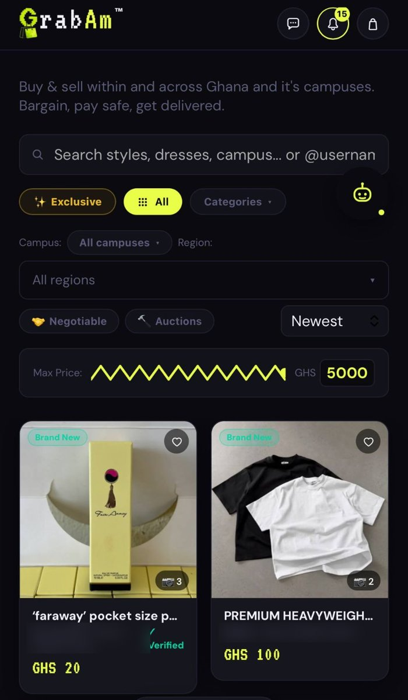
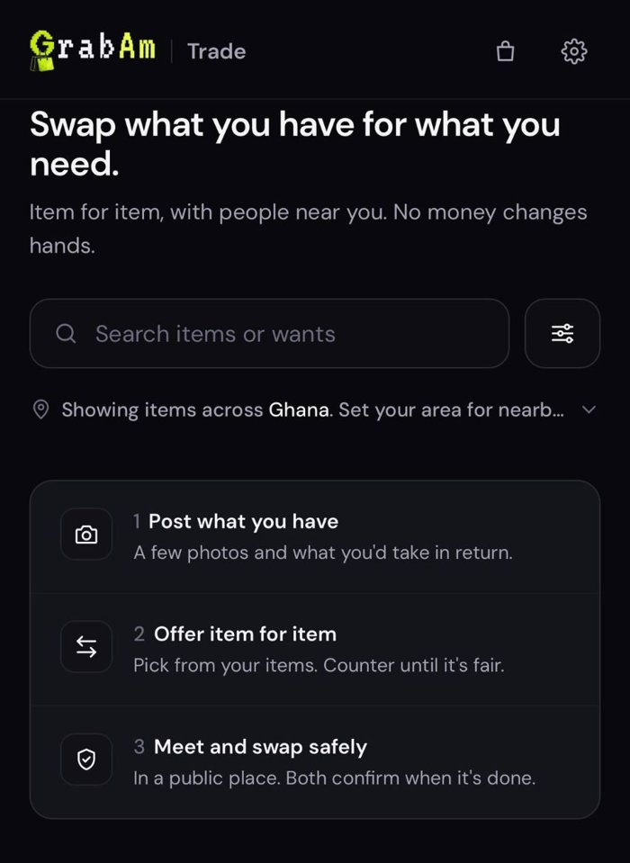

Founder · 2026 to present · A Siryn Technologies Limited venture · grabam.com
A peer-to-peer marketplace for students and the general public in Ghana, paid with MTN MoMo, Telecel Cash or AT Money. The buyer's payment is held with Moolre, a Bank of Ghana–licensed payment service provider, until the item is delivered. GrabAm Trade lets people swap items for items with no money involved.
What I built
The whole product, without a development team: React front end, Supabase (Postgres), Vercel serverless API, and Moolre payments, payouts, refunds and SMS.
Marketplace mechanics: held payments released after delivery, a dispute window, refunds, a wallet, offers, auctions, and an admin and moderation panel.
GrabAm Trade for item-for-item swaps, and Grabby Bot, an AI shopping assistant that answers from the platform's own policies and data.
How: AI-assisted development (Claude Code). I own the architecture, the compliance decisions, and the review and testing of every change.
Where it is today Public launch: October 2026
Live with real mobile-money payments, seller payouts, refunds and disputes running end to end, and GrabAm Trade open to anyone in Ghana at trade.grabam.com. Early stage: the focus now is growing the seller base.

Marketplace: browse, bargain, pay with MoMo. Other users' names blurred.

GrabAm Trade: item-for-item swaps.
Built to be trusted
Real customer money moves through GrabAm, so these controls run in production, not on a roadmap.
Data protection by design
Privacy policy written against Ghana's Data Protection Act, 2012 (Act 843). Phone numbers, MoMo numbers and one-time codes are scrubbed from error logs.
Least-privilege access
Database access is denied by default and opened per table and column, and every rule is tested as a real user, including the cases that must be refused.
Audit trail
Every admin action is logged with a before-and-after record, and every product change is written up: the problem, the evidence, the fix and what was verified.
Tested backups
Nightly encrypted off-platform backups, and a monthly drill that restores one into a clean database and checks every table.
KYC-informed onboarding
Phone verification at signup, and the MoMo account name must match the user's name, checked on the server. Shaped by Ghana's Anti-Money Laundering Act, 2020 (Act 1044).
Consumer protection
Payments are held until delivery. If a seller doesn't confirm they still have the item, the order cancels itself with a full refund.
Customer funds are held by a licensed payment service provider, not by GrabAm, after evaluating the escrow licensing rules in Ghana's Payment Systems and Services Act, 2019 (Act 987).
Ghana's police, fire and ambulance services each run their own dispatch. Siryn is a civic technology platform for coordinating emergency response across them, built for government and institutional partners.
Registered the company and lead it.
Drafted a Memorandum of Understanding and formal proposals addressed to the Ghana Police Service, Ghana National Fire Service, National Ambulance Service, Ministry of Health and National Communications Authority.
Led meeting preparation and follow-up with the National Communications Authority, turning technical material into documents officials could act on.
Drafted a patent application covering the platform's core dispatch mechanism.
Experience & education
2026 to present
Founder, GrabAmPeer-to-peer marketplace and GrabAm Trade.
Acting Manager, Kuzembela Auto Parts EnterpriseRan daily operations, supervised staff, and managed customer relationships and business records.
Nov 2023 to Oct 2024
Administrative & ICT Support Assistant, Amanase Senior High SchoolNational Service. IT and administrative support.
Sept 2022 to Nov 2022
Intern, Ministry of Gender, Children and Social ProtectionFieldwork on children's sexual health advocacy; data collection and analysis for policy reports.
Apr 2019 to Jun 2019
Volunteer, Adanu Foundation (NGO), NigeriaFundraising, donation distribution and community health outreach.
2019 to 2023
BA in Humanities (Political Science & Classical Studies)University of Ghana, Legon
Skills
Product & platform buildingPayments & marketplace designCompliance & data protectionRisk & controls designInstitutional engagementProposal & MoU draftingReactSupabase / PostgresSQLPythonVercelAI-assisted development
Get in touch
Partnerships, investment, or questions about GrabAm and Siryn.